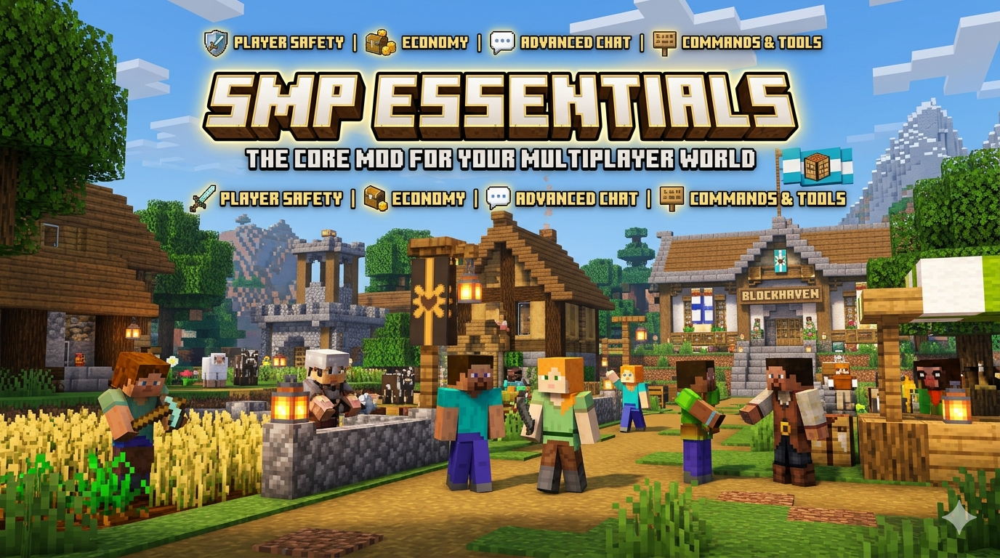

Een complete toolkit voor je Minecraft SMP — valuta, winkels, bank, jobs & quality-of-life
SMP Essentials bundelt alles wat een survival-multiplayer fijn maakt: een echte economie met tastbare munten, een bank, winkel-NPC's met kist-voorraad, betaalde jobs, en de klassieke quality-of-life commando's zoals homes, warps en teleport-verzoeken.
Koper/zilver/goud als items, een wallet, en een craftbaar bank-blok.
Verdien automatisch munten met minen en oogsten.
Winkel-NPC's met een kist als voorraad, in te stellen per shop.
Homes, warps, /spawn en teleport-verzoeken tussen spelers.
Drie denominaties met een vaste wisselkoers. Alles wordt intern in koper gerekend.
| Munt | Item-id | In koper | Notatie |
|---|---|---|---|
| Koper | smpessentials:copper_coin | 1 | c |
| Zilver | smpessentials:silver_coin | 9 | s |
| Goud | smpessentials:gold_coin | 81 | g |
1g 2s 4c = 1 goud + 2 zilver + 4 koper = 103 koper. Te vinden in de creatief-tab “SMP Essentials”.Alle recepten zijn vormloos (shapeless) — de volgorde maakt niet uit.
| Invoer | Resultaat |
|---|---|
| 9× koper | 1× zilver |
| 9× zilver | 1× goud |
| 1× zilver | 9× koper |
| 1× goud | 9× zilver |
| Invoer | Resultaat |
|---|---|
| 1× 💎 diamant | 1× goud (81 koper) |
| 1× 💚 emerald | 3× zilver (27 koper) |
Naast fysieke munten heeft elke speler een persoonlijke rekening (wallet).
| Commando | Wat het doet |
|---|---|
/balance | Toont je saldo. |
/deposit | Stort alle munten uit je inventory. |
/withdraw <bedrag> | Neemt munten op als items (in koper). |
/pay <speler> <bedrag> | Stuurt geld naar een andere speler. |
Een craftbaar blok (8× ijzer rond 1× goud coin) waarmee je je wallet beheert zonder commando's.
Vijanden laten munten vallen; sterkere mobs geven meer.
| Mob | Drop (ongeveer) |
|---|---|
| Zombie / Husk / Spider | 1–3 koper |
| Skeleton / Creeper / Pillager | 2–7 koper |
| Blaze / Wither Skeleton | 5–10 koper |
| Enderman / Warden / Elder Guardian | 1–5 zilver |
| Wither / Ender Dragon | 2–5 goud |
Munten zitten in dungeon-, mineshaft-, stronghold-, bastion-, end city- en nether fort-kisten.
Verdien automatisch munten op je wallet door te werken — beloning verschijnt in je actiebalk (+ 8c (job)). Werkt alleen in survival.
| Erts | Beloning |
|---|---|
| Kool / Koper / Quartz | 2c |
| IJzer / Lapis / Redstone / Nether-goud | 3c |
| Goud | 5c |
| Diamant | 8c |
| Emerald | 10c |
| Ancient Debris | 25c |
Elk rijp gewas (tarwe, wortel, aardappel, biet) → 1c. Onrijp = geen beloning (geen exploit). Bekijk alles met /jobs.
Een speler-tot-speler marktplaats die volledig via je wallet loopt — geen losse munten nodig, betaling gaat automatisch van koper naar verkoper.
| Commando | Wat het doet |
|---|---|
/ah sell <prijs> | Zet het item in je hand te koop (prijs in koper). |
/ah | Bekijk alle aanbiedingen met klikbare [Koop]-knoppen. |
/ah buy <id> | Koop een aanbod — betaalt uit je wallet, item komt in je inventory. |
/ah mine | Je eigen aanbiedingen, met [Annuleer]-knoppen. |
/ah cancel <id> | Trek een aanbod terug en krijg je item terug. |
Een instelbare winkel-NPC, perfect voor een shopping district waar elke speler z'n eigen shop runt.
/shopkeeper spawn. De NPC verschijnt waar je kijkt.Shift + rechtsklik (als eigenaar of OP):
Rechtsklik opent het handelsscherm; shift-klik = meerdere kopen.
Een schatkist die je met een sleutel opent voor willekeurige beloningen — gokken met je verdiende goud.
| Kans | Beloning |
|---|---|
| 35% | 1–2 goud coin |
| 25% | 2–5 zilver coin |
| 15% | 1–3 diamant |
| 13% | 4–12 ijzer |
| 7% | 1–3 emerald |
| ~4% | 5–9 goud coin (jackpot) |
| 1% | netherite scrap 💎 |
Bescherm je gebied tegen grief — per chunk, met trust voor vrienden.
| Commando | Wat het doet |
|---|---|
/claim | Claim de chunk waar je in staat (16×16). |
/unclaim | Geef je claim weer vrij. |
/claims | Tel je geclaimde chunks. |
/claim show | Toon gekleurde chunk-randen in de wereld (toggle). |
/trust <speler> | Geef een vriend bouwrechten in al je claims. |
/untrust <speler> | Neem die rechten weer af. |
/claim show zie je groene randen om jouw claims en rode om die van anderen — werkt met élke map-mod (Xaero included).Meerdere homes met namen + tab-aanvulling. /sethome, /home, /delhome, /homes.
Server-brede teleportpunten (OP zet ze). /warp, /setwarp, /delwarp, /warps.
Snel terug naar de wereld-spawn met /spawn.
Teleport-verzoeken tussen spelers. /tpa, /tpahere, /tpaccept, /tpdeny.
Spring terug naar je vorige locatie — of naar je sterfplek als je net bent overleden.
Bij overlijden vallen je spullen niet rond, maar landen veilig in een kist op je sterfplek.
/home + Tab voor je opgeslagen homes. /back onthoudt je locatie vóór elke teleport, en geeft voorrang aan je laatste sterfplek.Zet een prijs op iemands hoofd — wie diegene in PvP verslaat, incasseert de beloning.
| Commando | Wat het doet |
|---|---|
/bounty set <speler> <bedrag> | Zet een bounty (betaalt uit jouw wallet). Meerdere spelers kunnen stapelen. |
/bounty list | Overzicht van alle open bounties, gesorteerd op bedrag. |
Een quest-NPC die items inneemt in ruil voor een beloning op je wallet.
/questgiver spawn — de NPC verschijnt daar (groenig getinte skin, herkenbaar t.o.v. de shopkeeper)./questgiver setitem <aantal>./questgiver setreward <bedrag>./questgiver toggleonce — quest maar één keer per speler beschikbaar.Rechtsklik de NPC: heb je genoeg van het item, dan wordt het ingenomen en de beloning op je wallet gestort (met geluid + groene partikels). Te weinig? Je ziet precies hoeveel je nog mist. Shift+rechtsklik (eigenaar/OP) toont de huidige instellingen.
Een GUI-venster voor OP's om hele mod-onderdelen aan/uit te zetten, zonder herstart.
Open met /smpadmin (alleen OP). Schakelt direct en blijft bewaard na een herstart:
| Schakelaar | Effect indien UIT |
|---|---|
| Jobs | Geen wallet-beloning meer bij minen/oogsten. |
| Claims | Claim-bescherming wordt genegeerd (claims blijven geregistreerd). |
| Death Chest | Spullen vallen weer gewoon vanilla rond bij overlijden. |
| Loot Crates | Sleutels werken niet meer; spelers krijgen een melding. |
| Bounties | /bounty set geblokkeerd; uitbetalen bij een kill stopt. |
| Veilinghuis | /ah sell en /ah buy geblokkeerd. |
| Categorie | Commando | Functie |
|---|---|---|
| Wallet | /balance | Toon saldo. |
/deposit | Stort al je munten. | |
/withdraw <bedrag> | Neem munten op. | |
/pay <speler> <bedrag> | Betaal een speler. | |
| Jobs | /jobs | Toon job-tarieven. |
| Shop | /shopkeeper spawn | Plaats winkel op aangekeken blok. |
/shopkeeper addtrade <prijs> | Artikel toevoegen (chat-variant). | |
/shopkeeper removetrade <index> | Artikel verwijderen. | |
/shopkeeper setname <naam> | Winkel een naam geven. | |
/shopkeeper remove | Winkel verwijderen. | |
| Homes | /sethome [naam] | Home opslaan. |
/home [naam] | Naar home teleporteren. | |
/delhome [naam] | Home verwijderen. | |
/homes | Lijst je homes. | |
| Warps | /warp <naam> | Naar warp teleporteren. |
/warps | Lijst alle warps. | |
/setwarp <naam> OP | Warp zetten. | |
/delwarp <naam> OP | Warp verwijderen. | |
| Teleport | /spawn | Naar wereld-spawn. |
/tpa <speler> | Vraag naar iemand te teleporteren. | |
/tpahere <speler> | Vraag of iemand naar jou komt. | |
/tpaccept | Verzoek accepteren. | |
/tpdeny | Verzoek weigeren. | |
| Back | /back | Terug naar vorige locatie of sterfplek. |
| Veiling | /ah | Bekijk de marktplaats. |
/ah sell <prijs> | Item in hand te koop zetten. | |
/ah buy <id> | Een aanbod kopen. | |
/ah mine | Je eigen aanbiedingen. | |
/ah cancel <id> | Aanbod terugtrekken. | |
| Claims | /claim | Chunk claimen. |
/unclaim | Claim vrijgeven. | |
/claims | Aantal claims. | |
/claim show | Chunk-randen tonen (toggle). | |
/trust <speler> | Vriend bouwrechten geven. | |
/untrust <speler> | Rechten afnemen. | |
| Crates | (rechtsklik met sleutel) | Loot crate openen. |
| Bounty | /bounty set <speler> <bedrag> | Bounty zetten. |
/bounty list | Open bounties bekijken. | |
| Quests | /questgiver spawn | Quest-NPC plaatsen op aangekeken blok. |
/questgiver setitem <aantal> | Vereist item instellen (item in hand). | |
/questgiver setreward <bedrag> | Beloning instellen. | |
/questgiver toggleonce | Eenmalig per speler aan/uit. | |
/questgiver remove | Quest-NPC verwijderen. | |
| Admin | /smpadmin OP | Server-instellingenvenster openen. |
Munten, wallet, bank, jobs, shops & veilinghuis ✓. Mogelijk nog: koop-én-verkoop-shops.
Claimen, bescherming, trust & chunk-randen ✓. Mogelijk nog: kosten/limiet via munten.
Homes, warps, spawn, tpa, /back & death-chest ✓.
Loot-crates, bounties & NPC-quests ✓. Mogelijk nog: server-brede events.
GUI-instellingenvenster (/smpadmin) om mod-onderdelen aan/uit te zetten ✓.